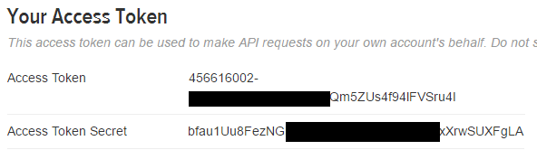

secrets¶
Par Maël Pedretti 1
Introduction¶
Avec une croissance toujours plus rapide et s’intégrant de plus en plus dans notre quotidien, l’informatique moderne requiert une sécurité accrue. Les équipements devenant de plus en plus puissants, il n’est plus suffisant d’utiliser des chaînes pseudo-aléatoires pour sécuriser une transmission. Pour remédier à ce problème, Python s’est aggrandi du module suivant.
secrets est un module python utilisé pour générer des chaînes de caractères aléatoires cryptographiquement fortes. Celles-ci sont utilisables pour gérer des données telles que des mots de passe, des authentifications, des jetons de sécurité et autres secrets associés. Ce module n’est disponible que depuis la version 3.6 de python (PEP 506).
Utilisations¶
Ce mode devrait être utilisé de préférence au générateur de nombres pseudo-aléatoires par défaut dans le module random, qui est conçu pour la modélisation et la simulation et non pas la sécurité ou la cryptographie.
Nombres aléatoires¶
Ce module donne accès à la source d’aléatoire la plus sécurisée que votre système d’exploitation fournit. Pour fournir des nombres aléatoirs cryptographiquement sûres, le système ne se base pas sur des calculs mais sur un composant physique (un générateur de nombres aléatoires matériel) réagissant à des phénomènes microscopiques qui créent de faibles signaux de bruit statistiquement aléatoires, comme le bruit thermique ou l’effet photoélectrique.
Classe
secrets.SystemRandompermet de générer des nombres aléatoires, voirrandom.SystemRandompour plus de détailschoice(séquence)retourne un élément aléatoire à partir d’une séquencerandbelow(i)retourne un nombre entier aléatoire entre zéro et irandbits(j)retourne un nombre entier aléatoire composé de j bits
Jetons¶
Ce module fournit également des fonctions pour générer des jetons sécurisés, adaptés à des applications telles que des réinitialisations de mots de passe via des URL difficiles à deviner, des authentifications via API tierces, et d’autres utilisations similaires.
token_bytes(k)retourne une chaine binaire composé de k bytes.token_hex(l)retourne une chaine de texte hexadécimale composée de l bytes convertis chacun en deux digits hexadécimaux.token_urlsafe(m)retourne une chaine de texte de m bytes utilisable dans une URL. Le texte est encodé en base64 donc chaque byte est représenté par environ 1.3 charactère.
Si k, l ou m ne sont pas renseignés, un nombre raisonnable sera utilisé par défaut.
Pour résister à une attaque de force brute, les jetons doivent être suffisament longs pour être suffisament aléatoires. Cependant, cette notion de suffisance reste assez vague. Plus les ordinateurs deviennent puissants, plus les jetons devront être longs afin de ralonger le temps nécessaire à une machine pour le découvrir. D’après la documentation python, des jetons de 32 bytes sont suffisament sécurisés à l’heure actuelle.
Autre¶
secrets.compare_digest(a,b)permet de comparer deux chaînes de texte de manière à réduire le risque d”attaques temporelles. Pour faire court, une attaque temporelle consiste à mesurer le temps requis pour comparer deux chaînes et de ce fait en déduire l’algorithme de comparaison afin de pouvoir subtiliser un mot de passe ou une chaîne de chiffrement.
Exemples¶
"""
Génération d'un mot de passe aléatoire.
Mot de passe aléatoire de 10 charactères contenant au minimum :
- une lettre majuscule,
- une lettre minuscule,
- et 3 chiffres.
"""
import string
from secrets import choice
alphabet = string.ascii_letters + string.digits
while True:
password = ''.join(choice(alphabet) for i in range(10))
if (any(c.islower() for c in password) and
any(c.isupper() for c in password) and
sum(c.isdigit() for c in password) >= 3):
break
print(password)
$ python password.py
68sZmkdve4
Génération d’un jeton hexadécimal d’une longueur de 16 bytes.
>>> secrets.token_hex(16)
b'7e5e31e55f5a878980bb230b7e5c7fbe'
Génération d’un jeton d’une longueur de 16 bytes pouvant être utilisé dans une URL
>>> secrets.token_urlsafe(16)
'k84RkJMyMpX6e3qzVXRqcw'
On notera la différence de longueur des deux chaînes de 16 bytes. L’encodage utilisé dans la deuxième (base64) encode environ 6 bits sur un caractère tandis que dans la première ce ne sont que 4 bits qui sont encodés en un caractère.
Tokens, hachage et sécurité annexe¶
L’image ci-dessous démontre l’utilisation de tokens. Pour qu’une application tierce puisse se connecter à l”API Twitter, OAuth est utilisé pour lui fournir un accès sécurisé. Dans ce cas, deux chaînes aléatoires sont générés pour pouvoir se connecter. La première identifie l’application et la deuxième sert à signer les messages. De ce fait, twitter peut vérifier que l’application qui a requis les informations est bien autorisée à le faire et qu’elle respecte le niveau de confidentialité enregistré dans les paramètres.
{kind=link}
Dans le cas de OAuth, la clé de signature est composée de la clé secrète (absente de l’image) et du jeton secret. Les deux jetons ne sont pas fourni de base par l’API mais sont regénérés à chaque requête. Il sont ici présents sur l’image car ils permettent de faire des tests lors de l’implémentation de la connexion.
Le processus de récupération des données à l’API Twitter est le suivant:
L’application doit obtenir un jeton de demande en envoyant un message signé (en utilisant
hmacpar exemple) contenant la clé d’utilisateur.Si la provenance du message est confirmée (voir exemple pratique ci-dessous) et que l’application est autorisée, le serveur renvoie un token (
secrets.token_hex()) et un token secretL’application redirige l’utilisateur pour qu’il puisse accepter la demande de connexion à son compte. Lors de la redirection, l’application précise le jeton reçu à l’étape précédente.
Si l’utilisateur accepte et que le jeton est correct, le serveur renvoie une clé de vérification
L’application recontacte alors Twitter en précisant la clé de vérification, le jeton, etc.
Si tout est vérifié, Twitter renvoie alors un jeton, un jeton secret, et les informations demandées par l’application.
Exemple pratique¶
"""
Hashage d'un message avec hmac à partir d'une clé générée par secrets.
La clé secrète est connue du client et du serveur uniquement.
Normalement un identifiant est transmis afin que le serveur puisse
trouver la clé privée correspondant au client
La clé secrète peut être générée de n'importe quelle manière,
pour autant qu'elle soit cryptographiquement sûre.
"""
import hmac
import secrets
# Le client a un message à transmettre, il le hash et
# envoie le message et la signature (digest)
secret_key = secrets.token_bytes(32)
message = "Ceci est un exemple de hashage"
encoded_message = message.encode('utf-8')
hash_object = hmac.new(secret_key, encoded_message)
digest = hash_object.digest()
print("Client digest -- ", digest)
# Admettons maintenant que le serveur reçoive le message et le digest.
# Il répète le même processus et compare les resultats.
server_encoded_message = message.encode('utf-8')
server_hash_object = hmac.new(secret_key, server_encoded_message)
server_digest = server_hash_object.digest()
print("Server digest -- ", server_digest)
if(secrets.compare_digest(digest, server_digest)):
print("-> Provenance confirmée")
else:
print("-> Provenance non confirmée")
$ python hash.py
Client digest -- b'\x9f5\xe5\x87\xda\x94\x10\x9e\x92\x92\x04\x81<o^\t'
Server digest -- b'\x9f5\xe5\x87\xda\x94\x10\x9e\x92\x92\x04\x81<o^\t'
-> Provenance confirmée
Explications¶
Les deux clés utilisées au point 1 permettent au serveur de vérifier l’authenticité de la requête. Le serveur vérifie via hashage si la signature reçue correspond au message reçu haché avec la clé secrète. Pour ce faire, il hache lui-même le message avec sa clé et compare les résultats. Si le hash reçu est identique au hash calculé, l’origine du message est vérifiée. Il ne reste au serveur qu’à vérifier que la clé d’utilisateur est valide et possède bien le droit de faire une requête. Si tout est correct, le serveur envoie le token d’accès à l’application.
Pour que la sécurité des échanges soit garantie, il ne faut pas que la clé secrète aléatoire puisse être prédite par le hacker. Une source d’aléatoire comme random est prédictible et permet donc au final de déduire la clé et ensuite de voler l’identité de l’application. En effet, il suffit de hasher le même message plusieurs fois, d’en déduire les clés utilisées, de faire un peu de maths, et si la source n’est pas sûre, il est possible de prédire les futures clés produites et donc de voler les identités des applications afin de récupérer des données. C’est ce qu’on appelle une attaque de générateur de nombre aléatoire.
C’est là qu’est tout l’intérêt du module secrets et de ses fonctions de génération de chaînes aléatoires. En empêchant qui que ce soit de prédire les résultats aléatoires, il est possible d’empêcher que les clés soient découvertes.
Cependant, le problème ne s’arrête pas là. Premièrement, lors des communications, si aucun protocole de sécurité de couche de transport n’est utilisé, la durée de validité d’un secret partagé ne doit pas être supérieur au temps qu’il faudrait à un hacker pour le découvrir via une attaque de force brute. Le serveur doit donc adapter la complexité du secret partagé. Une bonne pratique consiste à générer les secrets aussi longs que possibles afin d’avoir une sécurité maximum 2.
Deuxièmement, lorsque le serveur de vérification reçoit le message et le hash et que le serveur de ressources reçoit le jeton, ils doivent les vérifier. Cette étape peut également créer des failles de sécurité. Il s’agit des attaques temporelles citées plus haut. Si la fonction de comparaison n’est pas assez sûre et ne prend pas toujours le même temps pour comparer les jetons et retourner la réponse, un hacker suffisament doué pourra récupérer des informations sur le système de comparaison, et de ce fait déduire le jeton correct en le devinant bytes après bytes par exemple.
La différence entre une comparaison normale et la fonction secrets.compare_digest() réside dans le temps passé à comparer les chaînes.
Lors du test de "AAA" == "BBB", lorsque le premier byte est faux, la fonction renvoie False tandis que secrets.compare_digest("AAA","BBB") continue comme si de rien était et renvoie False après avoir parcouru tous les bytes.
Pour un pirate, le premier test offre une faille magnifique. Il suffit d’envoyer à la suite des chaînes de deux bytes en ne faisant varier que le premier, et regarder quelle combinaison prend le plus de temps à être vérifiée. Celle qui prend le plus de temps est celle dont la fonction a validé le premier byte et a renvoyé false au deuxième tandis que les temps plus courts correspondent à un renvoi de false déjà au premier byte. En connaissant ce problème, il est facile de deviner un mot de passe, en essayant pour chaque byte.
Conclusion¶
Le module secrets est un module destiné aux utilisateurs avancés ayant des besoins de sécurité supérieurs à la normale.
Il est simple d’utilisation et offre différents outils permettant la création de mots de passe et jetons sécurisés. Toutefois, ce module n’offre pas la sécurité absolue. Il est nécessaire de connaître le domaine de la sécurité avant d’utiliser les fonctions le composant en se disant que magiquement les données seront protégées. Par exemple, un token aléatoire de 8 bytes ne tiendra pas longtemps face à une attaque de brute-force.